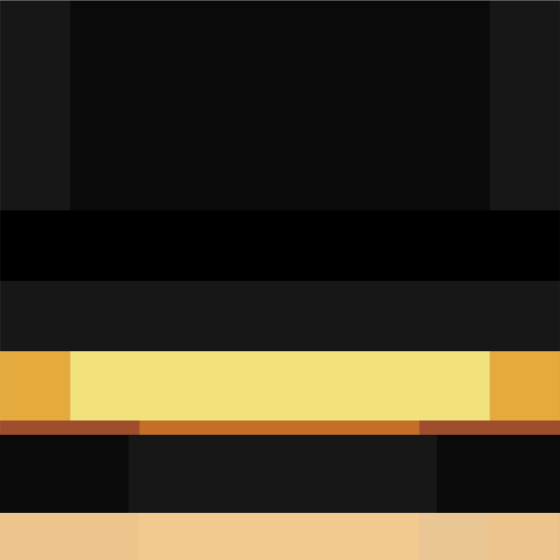
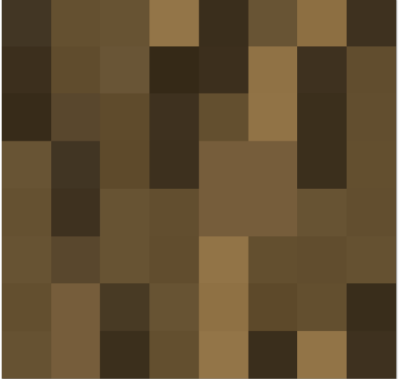
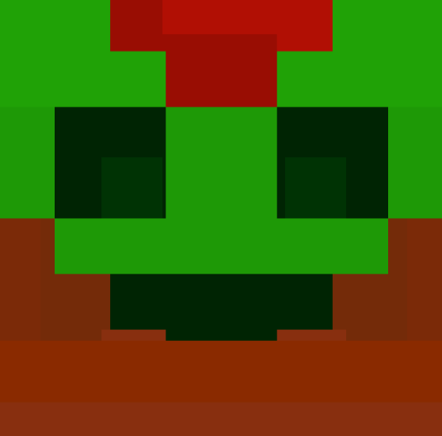
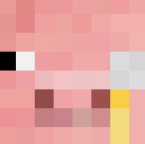
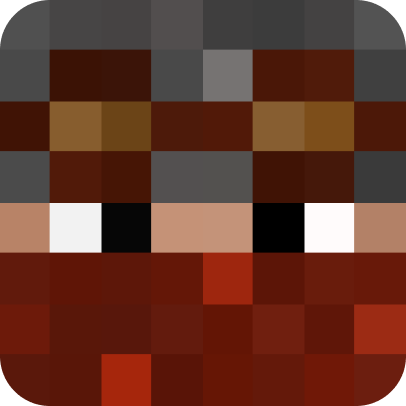
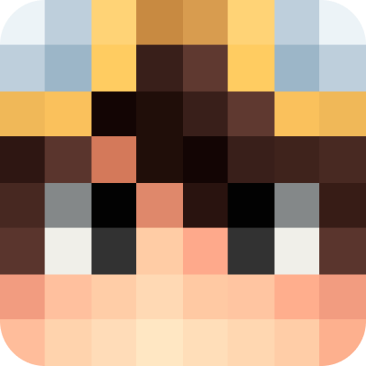

о нас
Клан Шляпники - это не просто клан, это место где люди общаются, развиваются, строят, проводят ивенты и не только. На данный момент количество участников превышает более 30 человек
наш маскот
почему нужно выбрать наш клан
Много различных ферм, на которых вы можете безгранично фармить опыт и ресурсы.
Активные игроки в клане.
Полезные моды и ресурс паки, которые украшают и оптимизируют игру.
Интересные ивенты которые проводят участники нашего клана, в которых вы можете поучаствовать или даже сделать свой.
Много различных целей, до которых мы доходим вместе!
доска почета
PWGood_
глава клана, создание фермы золота
ini_ga
дизайн сайта и его создание
BLINKS10
Модерация в клане, расчищение территории, оформление деревни
Future
оформление деревни, созднание кланового трейд холла
OMOGUAS
Созднание кланового трейд холла, создание арта
KAPTOTOXA
создание фермы рейда
DarkFoal
оформление клана в дискорде
Puha
создание арта, добыча ресурсов
FILIN201077
волонтерство
как попасть в наш клан
1.Вступить в дискорд клана (кнопка выше)
2.Открыть канал с заявками в клан
3.Открыть тикет
4.Ответить на вопросы
наши союзники
Гильдия банкиров (ГБ)
Семья
часто задаваемые вопросы
Какие требования для принятия в клан?
Главные требования: ваша активность и умение творить. Мы ценим творчество каждого нашего участника от кусочка земли до огромного небоскреба
Можно с бедрока вступить в клан?
Начиная с 3 июля 2024 года игроки с Bedrock Edition (телефонное издание) не принимаются, бывают исключения
У вас в клане настоящий пугод?
PWGoood_ не является тем известным лицом о котором вы думаете
У клана есть своя клан база?
Клан “Шляпники“ имеет множество территорий, в том числе и ферм. На данный момент у нас имеется две официальные клановые базы
Обязательно жить на базе клана?
Нет, если ваши предпочтения складываются на другую территорию, вы можете жить где хотите
Могу ли я состоять в двух кланах?
Нет, ваша позиция должна быть только в нашем клане
Сколько нужно играть на сервере чтобы вступить в клан?
Нужно играть на этом сервере минимум 2 недели
У вас есть правила клана?
Да, они у нас есть и расписаны в отдельном канале. Вступая в клан, вы обязаны их изучить
Если я не смогу сидеть в голосовом чате, то я смогу попасть к вам в клан?
Да, в таком случае вступить можно. У нас есть новостной канал
Как узнать координаты всех ваших активностей?
Все координаты клана будут указаны при принятии заявки